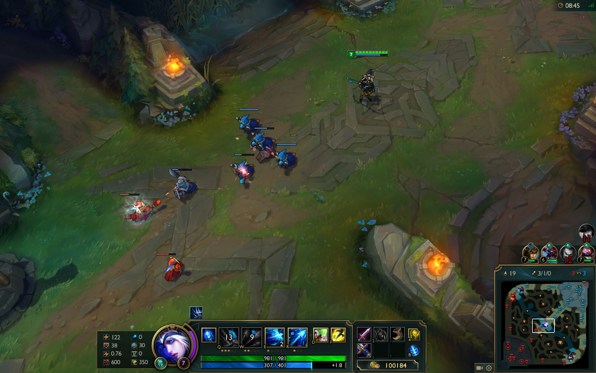
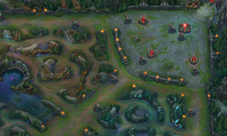

遊戲特色

遊戲畫面
《英雄聯盟》 簡稱 LoL 是由美國 RiotGames 所研發的大型網路戰略遊戲，玩家將扮演一名召喚師，選擇你所喜愛的英雄進入這個奇幻世界。遊戲中擁有許多風格相異的英雄，更加豐富、便捷的道具裝備，更多的地圖玩法、遊戲內容、積分排行和競技系統。獨創的「召喚師」系統及周邊技能、符文、天賦等自由度高的系統組合，衍生出千變萬化的遊戲方式。在英雄聯盟裡，什麼都有可能，但唯一不變的是：團隊合作就是一切！
遊戲類型
多人線上戰鬥競技場遊戲（MOBA，multiplayer online battle arena）又稱作動作即時戰略遊戲（ARTS，action real-time strategy），源自即時戰略遊戲（RTS）。玩家被分為兩隊，通常每個玩家只能控制其中一隊中的一名角色，以打垮對方隊伍的陣地建築為勝利條件。
遊戲方式
一隊五個玩家扮演召喚師召喚並控制英雄，並被各自分到兩組隊伍。兩組隊伍從地圖相反方向的主堡（Nexus）內開始，「破壞敵方的主堡」或「使敵方投降」以取得勝利。要破壞主堡，隊伍必須破壞一系列防禦塔，而防禦塔通常被放在可以抵達敵方水晶主堡的3條主要路線上，每個建築物（包括防禦水晶塔）在其外側建築物被破壞前會處於無敵（不能被攻擊）狀態。水晶主塔會定時派出小兵前往戰場，水晶主塔每30秒派出一波小兵。每個玩家通過殺死敵方小兵、敵方英雄或野區的中立怪物（部分附帶增益效果）來升級自己的英雄等級及獲得金錢增益。擊殺敵人也可以使自己的英雄在遊戲中取得金幣，以便購買物品來增進自己的能力。
如何開始遊戲？
創建召喚師角色
進行新手訓練 (建議)
點擊開始遊戲，選擇 vs 電腦或一般對戰
進入後選擇喜歡的英雄
選擇召喚師技能
戰鬥開始
VIDEO
如何贏得勝利？
遊戲的最終目的是摧毀敵方水晶主堡，在這之前要先摧毀沿路的防禦塔和兵營，讓己方兵線更向敵軍推進，進而取得更多優勢。下圖為正規比賽所使用的 5 v 5 對戰地圖《召喚峽谷》，其中有三條路線可供選擇，而其他地圖區域則為野區，每個位置都有不同的戰略地位。與同伴合力並擬定策略，是這款遊戲的核心概念。

5 v 5 對戰地圖